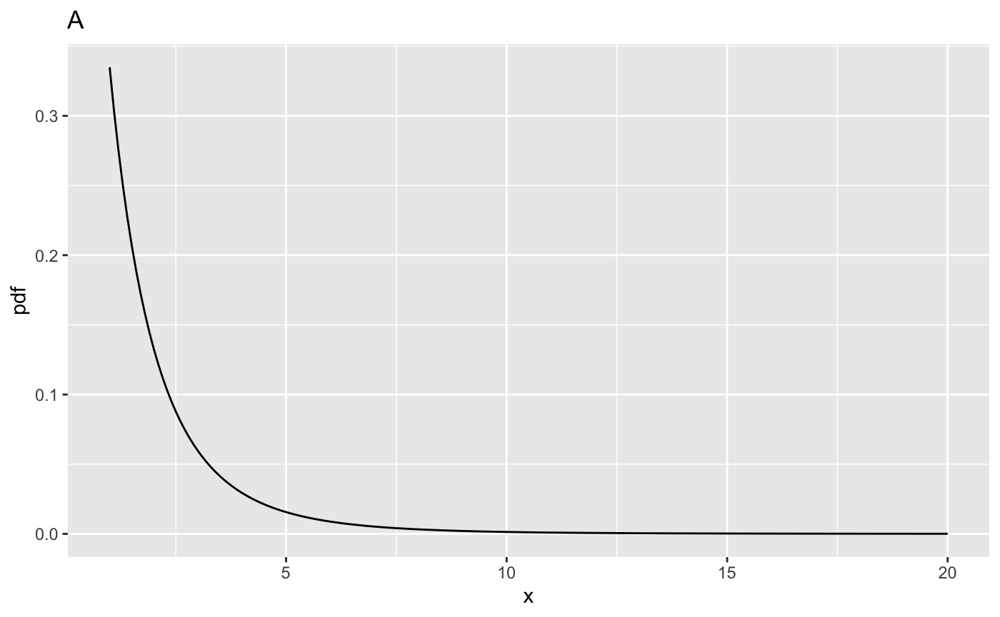
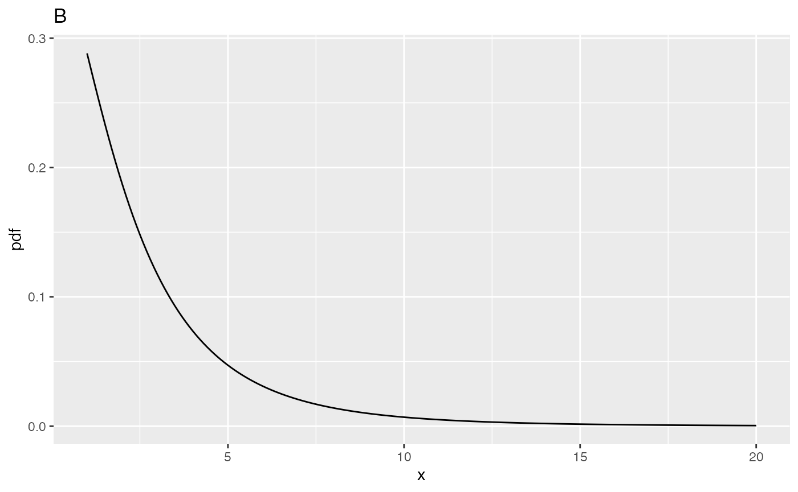
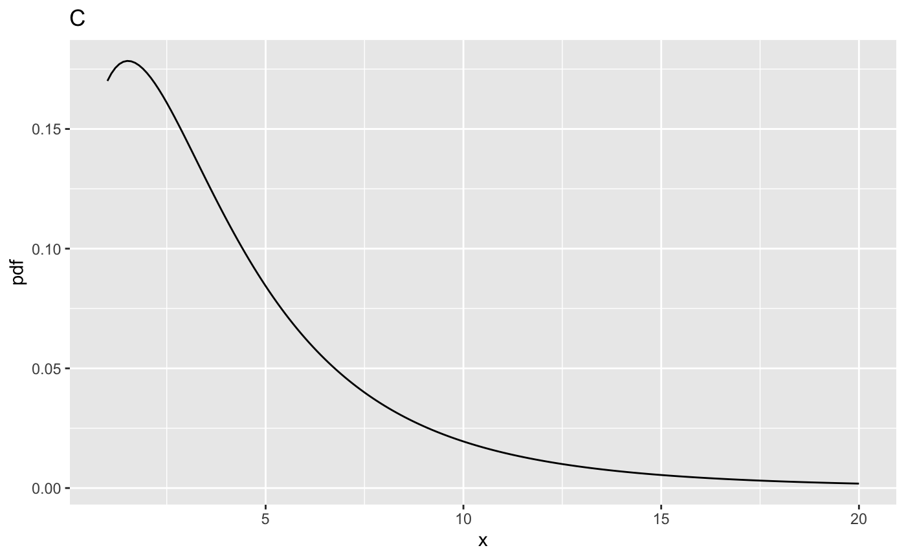
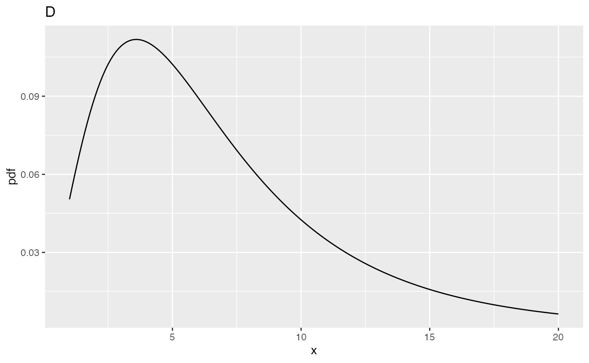
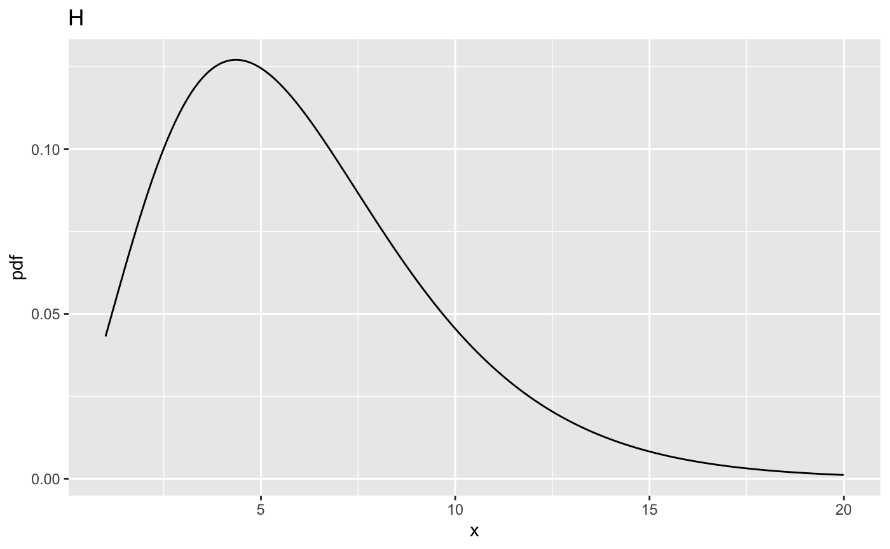
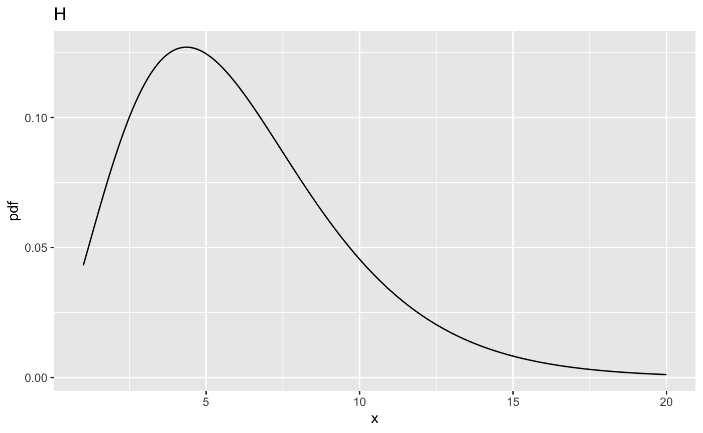
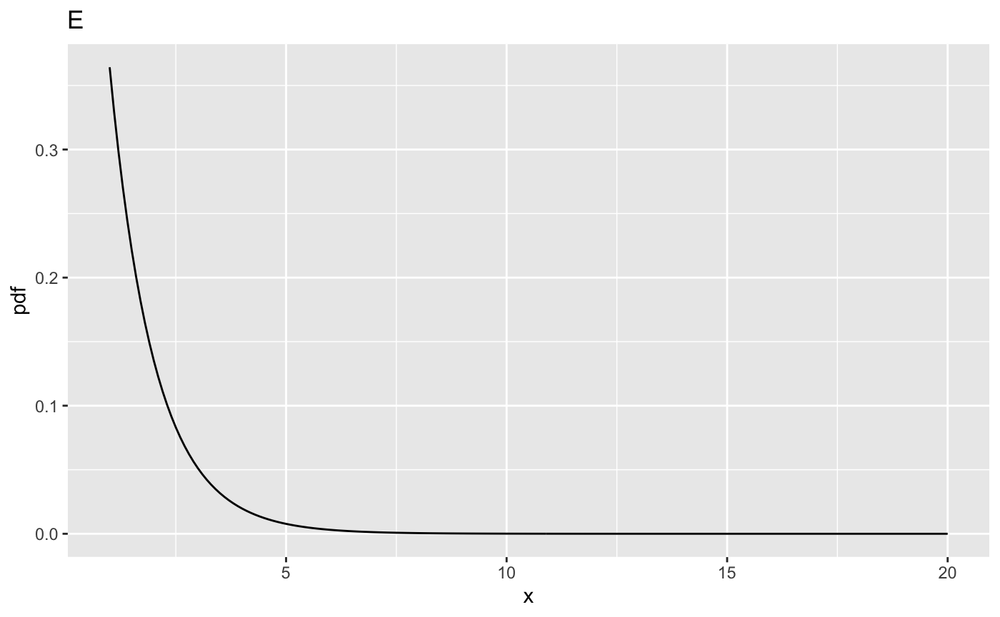
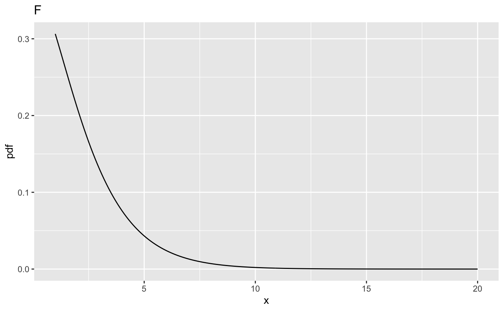
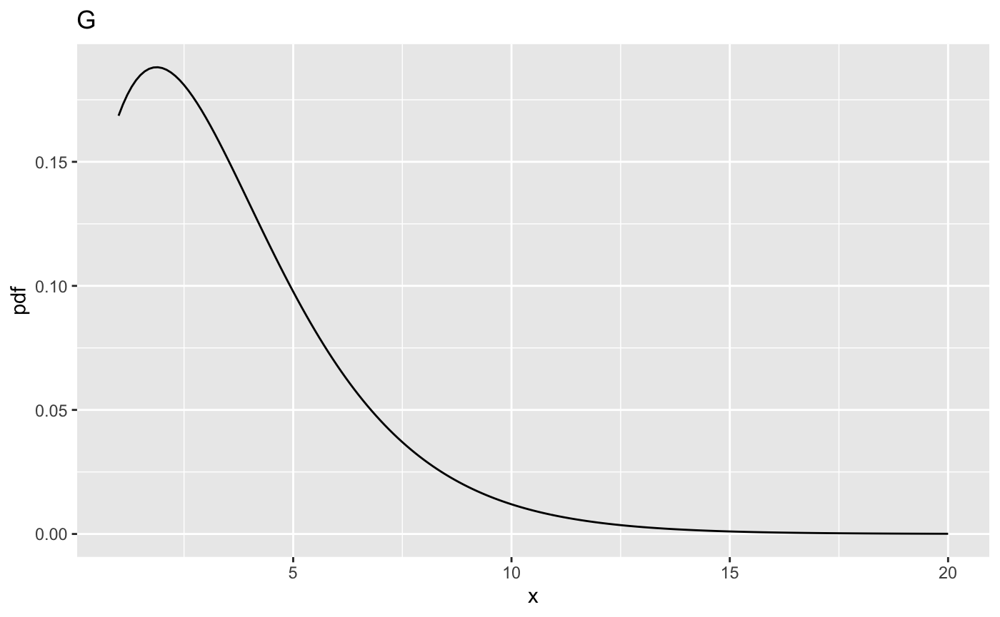
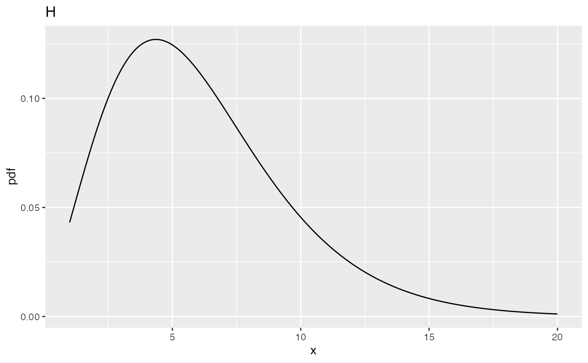

Chapter 11, Vignette 1: Background on the F distribution
Dev P. Chakraborty
2019-10-29
Ch11Vig1SampleSize.RmdIntroduction
Since it plays such a central role in sample size estimation, it is helpful to examine the behavior of the F-distribution. In the following ndf = numerator degrees of freedom, ddf = denominator degrees of freedom and ncp = non-centrality parameter (i.e., the delta appearing in Eqn. (11.6)).
The use of three functions is demonstrated.
qf(p,ndf,ddf)is the quantile function of the F-distribution for specified values ofndfandddf, i.e., the valuexsuch that fractionpof the area under the F-distribution lies to the right ofx. Since it is not included as a parameter, the default value, i.e., zero, ofncpis used. This is called the central F-distribution.df(x,ndf,ddf,ncp)is the pdf or probability density function of the F-distribution for specified values ofndf,ddfandncp.pf(x,ndf,ddf,ncp)is the probability (or cumulative) distribution function of the F-distribution for specified values ofndf,ddfandncp.
In the following four values of ncp are considered 0, 2, 5, 10.
Illustrating the F-distribution for ndf = 2, ddf = 10
In the following fCrit is the critical value of the F distribution, i.e., that value such that fraction \(\alpha\) of the area is to the right of the critical value. It is usually denoted \({{F}_{1-\alpha ,ndf,ddf}}\).
ndf <- 2;ddf <- 10;ncp <- c(0,2,5,10)
fCrit <- qf(0.95, ndf,ddf)
cat("critical value of x for rejecting NH is ", fCrit,"\n")
#> critical value of x for rejecting NH is 4.102821
x <- seq(1, 20, 0.1)
myLabel <- c("A", "B", "C", "D")
myLabelIndx <- 1
for (i in 1:length(ncp))
{
y <- df(x,ndf,ddf,ncp=ncp[i])
cat("ndf = ", ndf, ", ddf = ", ddf, ", ncp = ", ncp[i], ", prob > fCrit = ",
1-pf(fCrit, ndf, ddf, ncp = ncp[i]), "\n")
}
#> ndf = 2 , ddf = 10 , ncp = 0 , prob > fCrit = 0.05
#> ndf = 2 , ddf = 10 , ncp = 2 , prob > fCrit = 0.177584
#> ndf = 2 , ddf = 10 , ncp = 5 , prob > fCrit = 0.3876841
#> ndf = 2 , ddf = 10 , ncp = 10 , prob > fCrit = 0.6769776
for (i in 1:length(ncp))
{
y <- df(x,ndf,ddf,ncp=ncp[i])
curveData <- data.frame(x = x, pdf = y)
curvePlot <- ggplot(data = curveData, mapping = aes(x = x, y = pdf)) +
geom_line() +
ggtitle(myLabel[myLabelIndx]);myLabelIndx <- myLabelIndx + 1
print(curvePlot)
}
fCrit_2_10 <- fCrit
Illustrating the F-distribution for ndf = 2, ddf = 100
ndf <- 2;ddf <- 100
fCrit <- qf(0.95, ndf,ddf)
cat("critical value of x for rejecting NH is ", fCrit,"\n")
#> critical value of x for rejecting NH is 3.087296
x <- seq(1, 20, 0.1)
myLabel <- c("E", "F", "G", "H")
myLabelIndx <- 1
for (i in 1:length(ncp))
{
y <- df(x,ndf,ddf,ncp=ncp[i])
cat("ndf = ", ndf, ", ddf = ", ddf, ", ncp = ", ncp[i], ", prob > fCrit = ",
1-pf(fCrit, ndf, ddf, ncp = ncp[i]), "\n")
}
#> ndf = 2 , ddf = 100 , ncp = 0 , prob > fCrit = 0.05
#> ndf = 2 , ddf = 100 , ncp = 2 , prob > fCrit = 0.2199264
#> ndf = 2 , ddf = 100 , ncp = 5 , prob > fCrit = 0.4910802
#> ndf = 2 , ddf = 100 , ncp = 10 , prob > fCrit = 0.8029764
for (i in 1:length(ncp))
{
y <- df(x,ndf,ddf,ncp=ncp[i])
curveData <- data.frame(x = x, pdf = y)
curvePlot <- ggplot(data = curveData, mapping = aes(x = x, y = pdf)) +
geom_line() +
ggtitle(myLabel[myLabelIndx]);myLabelIndx <- myLabelIndx + 1
print(curvePlot)
}
fCrit_2_100 <- fCrit

 

Comments
- Corresponds to
ncp = 0. The critical value isfCrit_2_100= 3.0872959. Notice the decrease compared to the previous value, i.e., 4.102821, for ddf = 10. - Corresponds to
ncp = 2, andprob > fCrit_2_100= 0.2199264, greater than the previous value 0.177584. - Corresponds to
ncp = 5, and nowprob > fCrit_2_100= 0.4910802. - Corresponds to
ncp = 10, and nowprob > fCrit_2_100is 0.8029764.
Illustrating the F-distribution for ndf = 1, ddf = 100
ndf <- 1;ddf <- 100
fCrit <- qf(0.95, ndf,ddf)
cat("critical value of x for rejecting NH is ", fCrit,"\n")
#> critical value of x for rejecting NH is 3.936143
x <- seq(1, 20, 0.1)
myLabel <- c("I <- ", "J", "K", "L")
for (i in 1:length(ncp))
{
y <- df(x,ndf,ddf,ncp=ncp[i])
cat("ndf = ", ndf, ", ddf = ", ddf, ", ncp = ", ncp[i], ", prob > fCrit = ",
1-pf(fCrit, ndf, ddf, ncp = ncp[i]), "\n")
}
#> ndf = 1 , ddf = 100 , ncp = 0 , prob > fCrit = 0.05
#> ndf = 1 , ddf = 100 , ncp = 2 , prob > fCrit = 0.2883607
#> ndf = 1 , ddf = 100 , ncp = 5 , prob > fCrit = 0.6004962
#> ndf = 1 , ddf = 100 , ncp = 10 , prob > fCrit = 0.8793619
myLabelIndx <- 1
for (i in 1:length(ncp))
{
y <- df(x,ndf,ddf,ncp=ncp[i])
curveData <- data.frame(x = x, pdf = y)
curvePlot <- ggplot(data = curveData, mapping = aes(x = x, y = pdf)) +
geom_line() +
ggtitle(myLabel[myLabelIndx]);myLabelIndx <- myLabelIndx + 1
print(curvePlot)
}
fCrit_1_100 <- fCrit
Comments
- Corresponds to
ncp = 0. The critical value isfCrit_1_100= 3.936143. Notice the increase compared to the corresponding value forndf = 2, i.e., 3.0872959.
- Corresponds to
ncp = 2, andprob > fCrit_1_100= 0.2883607, larger than the previous value 0.2199264. - Corresponds to
ncp = 5, and nowprob > fCrit_1_100= 0.6004962, larger than the previous value 0.4910802. - Corresponds to
ncp = 10, and nowprob > fCrit_1_100is 0.8793619, larger than the previous value 0.8029764.
Summary
Power increases with increasing ddf and ncp; the effect of increasing ncp is quite dramatic. Decreasing ndf also increases power. At first glance this may seem counterintuitive, as fCrit has gone up, but can be explained by the differing shapes of the two distributions: the pdf is broader for ndf = 1 as compared to ndf = 2 (compare plot L to H).
Comments
ncp = 0, which yields the usual (aka central) F-distribution that was used in the previous two chapters (9 and 10). The integral under this distribution is unity (this is true for all plots above). The critical value,fCritin the code, is that value ofxsuch that the probability of exceedingxis \(\alpha\); in the current examplefCrit= 4.102821. Notice the use of the quantile functionqf()to determine this value, also that the default value ofncp, namely zero, is used; specifically, one does not pass a 4th argument toqf(). The decision rule for rejecting the NH uses the NH distribution of the F-statistic, i.e., reject the NH if F >=fCrit. As expected,prob > fCrit= 0.05 because this is howfCritwas defined.ncp = 2. It is noticeably shifted to the right as compared to A, thereby making it more likely that the observed value of the F-statistic will exceed the critical value determined for the NH distribution. In fact,prob > fCrit= 0.177584, which is the statistical power.ncp = 5, and nowprob > fCrit= 0.3876841.ncp = 10, and nowprob > fCritis 0.6769776. The effect of the shift is obvious in plots (C) and (D). Considering a vertical line atx = 4.10, most of the distribution in plot (D), more than 0.6769776, to be precise, lies to the right of this line, so the NH is more than 0.6769776 likely to be rejected. Of course, what causes the shift is the increased value of the non-centrality parameter. The larger that non-centrality parameter, the greater the shift to the right.